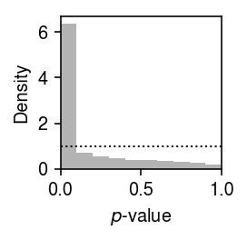
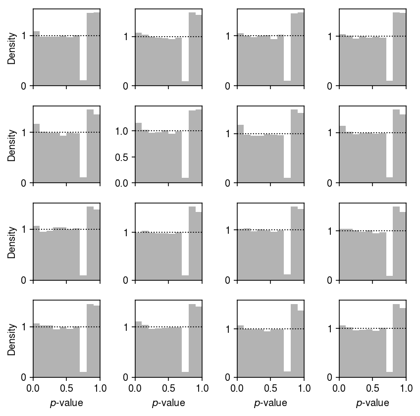
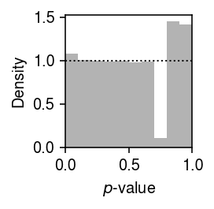

Expression variation in Census of Immune Cells
Table of Contents
Introduction
The Census of Immune Cells is part of the Human Cell Atlas. Currently, it comprises scRNA-seq of 593,844 cells from 16 donors.
Setup
import anndata import loompy import functools as ft import multiprocessing as mp import numpy as np import pandas as pd import scanpy import scipy.io as sio import scipy.sparse as ss import scmodes import scmodes.benchmark.gof import scmodes.ebpm.sgd import sys import torch
%matplotlib inline %config InlineBackend.figure_formats = set(['retina'])
import matplotlib.pyplot as plt plt.rcParams['figure.facecolor'] = 'w' plt.rcParams['font.family'] = 'Nimbus Sans'
Data
Pre-processing
The data is available in loom and Matrix Market format. The loom format
allows out-of-memory processing, but the entire sparse data should take 6GB
of memory. loom stores the data as dense, indexed hdf5, making it
unsuitable to load the entire data. However, out-of-memory scanning of the
metadata seems to be faster than loading everything into pandas.
The Matrix Market data is stored using format real, which makes it twice as
big as necessary. Convert the Matrix Market data to integer on disk.
sbatch --partition=mstephens #!/bin/bash zcat /project2/mstephens/aksarkar/projects/singlecell-ideas/data/human-cell-atlas/immune-cell-census/matrix.mtx.gz | \ awk 'NR == 1 {sub("real", "integer", $4)} NR > 1 {$3 = int($3)} {print}' >immune-cell-census.mtx
Read the sparse data. (16 minutes; reading compressed takes 26 minutes)
x = sio.mmread('/scratch/midway2/aksarkar/modes/immune-cell-census.mtx')
Get its shape.
x.shape
(58347, 782859)
As loaded, rows are genes, and columns are samples. Get its size in memory.
pd.Series({k: sys.getsizeof(getattr(x, k)) for k in ('row', 'col', 'data')}) / (2 ** 30)
row 2.307106 col 2.307106 data 4.614212 dtype: float64
The data still got read in as int64 in COO format, which defeated the
purpose of our processing on disk.
x.data.dtype
dtype('int64')
To actually do anything with the data, we need to convert to CSR/CSC. The current implementation converting COO to CSR is broken. One possible explanation is that the implementation of coalescing COO entries is the culprit, which isn't needed for this data (there should be no duplicate row/column entries).
Figure out whether the COO data is row-major or column-major.
(x.row[:5], x.col[:5])
(array([ 76, 198, 231, 326, 589], dtype=int32), array([0, 0, 0, 0, 0], dtype=int32))
Columns are samples, which means we can compress the indices and transpose in one shot.
indices = x.row indptr = np.hstack((0, 1 + np.where(np.diff(x.col))[0], x.nnz))
Make sure the compression was correct.
for j in range(10): assert (x.data[x.col == j] == x.data[indptr[j]:indptr[j+1]]).all()
We could actually get away with using np.int16, but we need torch.int32 on the GPU.
x.data.max()
21524
y = ss.csr_matrix((x.data.astype(np.int32), indices, indptr), shape=tuple(reversed(x.shape)))
Get the droplets which are predicted to contain mRNA from an intact cell.
with loompy.connect('/project2/mstephens/aksarkar/projects/singlecell-ideas/data/human-cell-atlas/immune-cell-census.loom') as d: keep_samples = d.ca['emptydrops_is_cell'] == 't' donor = pd.Categorical(d.ca['donor_organism.provenance.document_id'][keep_samples]) pd.DataFrame(donor).to_csv('/scratch/midway2/aksarkar/modes/immune-cell-census-samples.txt.gz', sep='\t') keep_samples.sum()
593844
Count how many cells came from each donor.
donor.value_counts()
085e737d-adb5-4597-bd54-5ebeda170038 37262 0a6c46dd-0905-4581-95eb-d89eef8a7213 36368 0b91cb1f-e2a8-413a-836c-1d38e7af3f2d 36672 31f89559-2682-4bbc-84c6-826dfe4a4e39 26079 4a404c91-0dbf-4246-bc23-d13aff961ba7 37493 4e98f612-15ec-44ab-b5f9-39787f92b01a 44776 509c507c-4759-452f-994e-d134d90329fd 32926 53af872d-b838-44d6-ae1b-25b56405483c 46690 6072d1f5-aa0c-4ab1-a8a6-a00ab479a1ba 45513 9aaf8a07-924f-456c-86dc-82f5da718246 35527 af7fe7a6-7d7e-4cdf-9799-909680fa9a3f 33235 cf514c66-88b2-45e4-a397-7fb362ae9950 31551 d23515a7-e182-4bc6-89e2-b1635885c0ec 42175 e4b5115d-3a0d-4c50-aba4-04b5f76810da 32834 eb8fb36b-6e02-41c4-8760-3eabbde6bacb 35376 fb30bb83-0278-4117-bd42-e2e8dddfedfe 39367 dtype: int64
Only keep genes with non-zero observations in 1000 cells.
gene_detect = (y[keep_samples] > 0).tocsc().sum(axis=0).A.ravel() keep_genes = gene_detect > 1000 keep_genes.sum()
16002
Write the gene metadata, only for the genes analyzed.
with loompy.connect('/project2/mstephens/aksarkar/projects/singlecell-ideas/data/human-cell-atlas/immune-cell-census.loom') as d: genes = pd.DataFrame({k: d.ra[k] for k in d.ra}).loc[keep_genes] genes.to_csv('/scratch/midway2/aksarkar/modes/immune-cell-census-genes.txt.gz', sep='\t')
We need to use CSC to subset genes, and then CSR to efficiently get minibatches (subset samples).
y_csr = y[keep_samples].tocsc()[:,keep_genes].tocsr()
y_csr.shape
(593844, 16002)
Write out the sparse data as npz. (5 minutes)
ss.save_npz('/scratch/midway2/aksarkar/modes/immune-cell-census.npz', y_csr)
Get its size on disk.
ls -lh /scratch/midway2/aksarkar/modes/immune-cell-census.npz
-rw-rw-r-- 1 aksarkar aksarkar 1.1G Dec 21 10:44 /scratch/midway2/aksarkar/modes/immune-cell-census.npz
Read the data
Read the sparse data. (20 seconds)
y_csr = ss.load_npz('/scratch/midway2/aksarkar/modes/immune-cell-census.npz')
Read the metadata.
genes = pd.read_csv('/scratch/midway2/aksarkar/modes/immune-cell-census-genes.txt.gz', sep='\t', index_col=0) donor = pd.Categorical(pd.read_csv('/scratch/midway2/aksarkar/modes/immune-cell-census-samples.txt.gz', sep='\t', index_col=0)['0'])
Results
Gamma assumption
Fit a Gamma distribution to expression variation within each donor at each gene. (18 s/epoch)
gamma_res = dict() for i, k in enumerate(donor.categories): print(f'Fitting donor {i}') gamma_res[k] = scmodes.ebpm.sgd.ebpm_gamma(y_csr[donor.codes == i], batch_size=128, lr=5e-2, max_epochs=10, verbose=True) gamma_res = pd.concat({ k: pd.DataFrame(np.vstack(gamma_res[k][:-1]).T, columns=['log_mu', 'neg_log_phi'], index=genes['Gene']) for k in gamma_res}, axis=1)
Write out the results.
gamma_res.to_csv('/scratch/midway2/aksarkar/modes/immune-cell-census-gamma.txt.gz', sep='\t')
Test GOF at each gene.
gamma_gof = [] for k, g in gamma_res.groupby(level=0, axis=1): query = y_csr[donor.codes == k].tocsc() s = query.sum(axis=1) for j, (gene, (log_mu, neg_log_phi)) in enumerate(g[k].iterrows()): d, p = scmodes.benchmark.gof._gof( x=query[:,j].A.ravel(), cdf=scmodes.benchmark.gof._zig_cdf, pmf=scmodes.benchmark.gof._zig_pmf, size=s, log_mu=log_mu, log_phi=-neg_log_phi) gamma_gof.append([gene, k, d, p]) gamma_gof = pd.DataFrame(gamma_gof, columns=['gene', 'donor', 'stat', 'p'])
Write the GOF results.
gamma_gof.to_csv('/project2/mstephens/aksarkar/projects/singlecell-modes/data/gof/immune-census-gamma.txt.gz', sep='\t')
Plot the histogram of GOF \(p\)-values.
plt.clf() plt.gcf().set_size_inches(2, 2) plt.hist(gamma_gof.pivot_table(index='gene', columns='donor', values='p').values.ravel(), bins=np.linspace(0, 1, 11), color='0.7', density=True) plt.axhline(y=1, lw=1, ls=':', c='k') plt.xlim(0, 1) plt.xlabel('$p$-value') plt.ylabel('Density') plt.tight_layout()

Plot the GOF by donor.
plt.clf() fig, ax = plt.subplots(4, 4, sharex=True) fig.set_size_inches(6, 6) for a, (k, g) in zip(ax.ravel(), gamma_gof.groupby(['donor'])): a.hist(g['p'].values.ravel(), bins=np.linspace(0, 1, 11), color='0.7', density=True) a.axhline(y=1, lw=1, ls=':', c='k') a.set_xlim(0, 1) for a in ax: a[0].set_ylabel('Density') for a in ax.T: a[-1].set_xlabel('$p$-value') fig.tight_layout()

Report the fraction of genes which significantly depart from Gamma (Bonferroni-corrected \(p < 0.05\)).
sig = gamma_gof[gamma_gof['p'] < 0.05 / gamma_gof.shape[0]] sig.shape[0] / gamma_gof.shape[0]
3.9057617797775274e-06
Point-Gamma assumption
Fit a point-Gamma assumption distribution to expression variation.
gamma_res = pd.read_csv('/scratch/midway2/aksarkar/modes/immune-cell-census-gamma.txt.gz', sep='\t', header=[0, 1], index_col=0) point_gamma_res = dict() for i, k in enumerate(donor.categories): print(f'Fitting donor {i}') point_gamma_res[k] = scmodes.ebpm.sgd.ebpm_point_gamma( y_csr[donor.codes == i], init=(gamma_res[k, 'log_mu'].values.reshape(1, -1), gamma_res[k, 'neg_log_phi'].values.reshape(1, -1)), batch_size=128, lr=2e-2, max_epochs=15, verbose=True)
Write out the results.
point_gamma_res = pd.concat({ k: pd.DataFrame(np.vstack(point_gamma_res[k][:-1]).T, columns=['log_mu', 'neg_log_phi', 'logodds'], index=genes['Gene']) for k in point_gamma_res}, axis=1) point_gamma_res.to_csv('/scratch/midway2/aksarkar/modes/immune-cell-census-point-gamma.txt.gz', sep='\t')
Test for GOF.
point_gamma_gof = [] for k, g in point_gamma_res.groupby(level=0, axis=1): query = y_csr[donor.codes == k].tocsc() s = query.sum(axis=1) for j, (gene, (log_mu, neg_log_phi, logodds)) in enumerate(g[k].iterrows()): d, p = scmodes.benchmark.gof._gof( x=query[:,j].A.ravel(), cdf=scmodes.benchmark.gof._zig_cdf, pmf=scmodes.benchmark.gof._zig_pmf, size=s, log_mu=log_mu, log_phi=-neg_log_phi, logodds=logodds) point_gamma_gof.append([gene, k, d, p]) point_gamma_gof = pd.DataFrame(point_gamma_gof, columns=['gene', 'donor', 'stat', 'p'])
Write out the GOF results.
point_gamma_gof.to_csv('/project2/mstephens/aksarkar/projects/singlecell-modes/data/gof/immune-census-point-gamma.txt.gz')
plt.clf() plt.gcf().set_size_inches(2, 2) plt.hist(point_gamma_gof.pivot_table(index='gene', columns='donor', values='p').values.ravel(), bins=np.linspace(0, 1, 11), color='0.7', density=True) plt.axhline(y=1, lw=1, ls=':', c='k') plt.xlim(0, 1) plt.xlabel('$p$-value') plt.ylabel('Density') plt.tight_layout()
